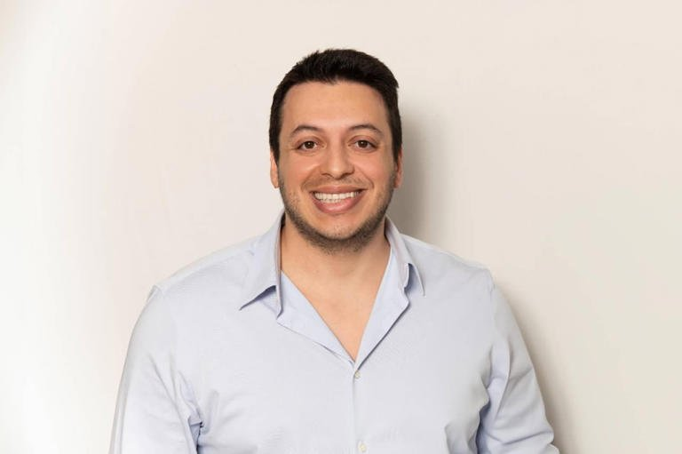

← Back to the founder directory

Alex Bouaziz
An engineer who grew up between Paris and Tel Aviv, met his co-founder at MIT, and built Deel into one of the fastest-growing companies for hiring and paying people across borders.
- Born
- 1993, Paris, France
- Based in
- Tel Aviv, Israel
- Known for
- Deel
- Role
- Co-founder and CEO
Early life and education
Alex Bouaziz was born in Paris in 1993 and spent his childhood between Paris and Tel Aviv. His father, Philippe Bouaziz, founded the IT company Prodware in 1989, so technology was part of life at home. Alex has said that as a child he dreamed of running Nintendo one day.
He studied civil and environmental engineering at the Technion in Israel, graduating with distinction in 2013, then earned a master's in environmental engineering at MIT, where he met his future co-founder Shuo Wang. He also did water-treatment research at Imperial College London, and in 2016 he left a PhD programme there because he wanted to build a company instead.
Early ventures
In 2016 he co-founded Lifeslice, a Tel Aviv startup making a mobile app for shared videos, and became a founding partner of the early-stage fund Sarona Ventures. Running Lifeslice taught him how hard it is for a small team to hire and pay people in other countries, with unclear legal rules, compliance gaps and slow payments. That experience shaped the idea for Deel.
Founding Deel
In 2019, Alex and Shuo Wang started Deel and joined Y Combinator's Winter 2019 batch. Their aim was to let companies hire, pay and support talent anywhere, with fair contracts and compliant protections for workers. The first product helped companies hire contractors globally, and the founders improved it by listening closely to customers and shipping quickly.
Growth
When the pandemic pushed companies towards remote work in 2020, demand for global hiring jumped. Deel raised a US$14 million Series A led by Andreessen Horowitz in May 2020. In April 2021 it raised US$156 million at a US$1.25 billion valuation, making it a unicorn within two years of founding. In May 2022 it raised US$50 million at a reported US$12 billion valuation and said it had passed US$100 million in annual recurring revenue.
Deel has since added payroll, benefits, IT and other HR services. It says it now helps companies hire and pay teams in more than 150 countries. In 2025 it passed US$1 billion in annual recurring revenue, according to Forbes, and in October 2025 it raised US$300 million at a US$17.3 billion valuation, co-led by Ribbit Capital and Andreessen Horowitz. In November 2025 it appointed former Intuit executive Joe Kauffman as president and CFO.
In March 2025, rival Rippling sued Deel and several executives, including Alex, alleging corporate espionage. Deel denies wrongdoing and filed its own lawsuit against Rippling in April 2025.
Investing
Alongside Deel, Alex is an active angel investor. His personal investments include Kalshi, ClickHouse, Ramp and Sorare, and he sits on the investment committees of Sarona Ventures.
Timeline
- 1993Born in Paris.
- 2013Graduates from the Technion; starts a master's at MIT, where he meets Shuo Wang.
- 2016Leaves a PhD programme at Imperial College London; co-founds Lifeslice and Sarona Ventures.
- 2019Co-founds Deel and joins Y Combinator.
- 2020Deel raises a US$14 million Series A.
- 2021Deel becomes a unicorn at a US$1.25 billion valuation.
- 2022Deel raises at a reported US$12 billion valuation.
- 2025Deel passes US$1 billion in annual recurring revenue and raises US$300 million at US$17.3 billion.
Recognition
- Forbes 30 Under 30, Finance (2021 list)
- Technion degree with distinction (2013)
- Web Summit Future Global Leaders Scholarship (2014)
Leadership lessons
- Solve a problem you have lived. Alex's trouble hiring abroad became Deel.
- Use your own product. He believes this keeps a founder close to its real strengths and flaws.
- Listen and change quickly. Deel's early product grew from customers' pain points.
- Talent, not location, should decide opportunity. This is the principle he says guides him.
Sources
Written from public information, including Deel, Forbes and Merlin. Deel's leadership page had no biography text. Sources differ on some details, such as who holds the CFO role at Deel, so those points are left out. Several figures are company-reported rather than confirmed. Net worth is left out because estimates change.